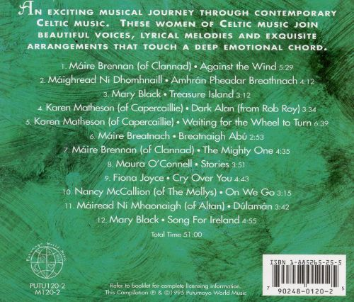

Right click on a track to download.
1. Máire Brennan (of Clannad) - Against the Wind
2. Máighread Ni Dhomhnaill - Amhrán Pheddar Breathnach
3. Mary Black - Treasure Island
4. Karen Matheson (of Capercaillie) - Dark Alan (from Rob Roy)
5. Karen Matheson (of Capercaillie) - Waiting For The Wheel To Turn
6. Máire Brennan (of Clannad) - The Mighty One
7. Connie Dover - In Aimsir Bhaint An Fheir
8. Máure Breatnach - Breatnaigh Abu
9. Maura O'Connell - Stories
10. Fiona Joyce - Cry Over You
11. Nancy McCallion (of The Mollys) - On We Go
12. Máiread Ni Mhaonaigh (of Altan) - Dúlamán
13. Mary Black - Song For Ireland

* ~ Merriest Wishes and A Happy New Year ~ *